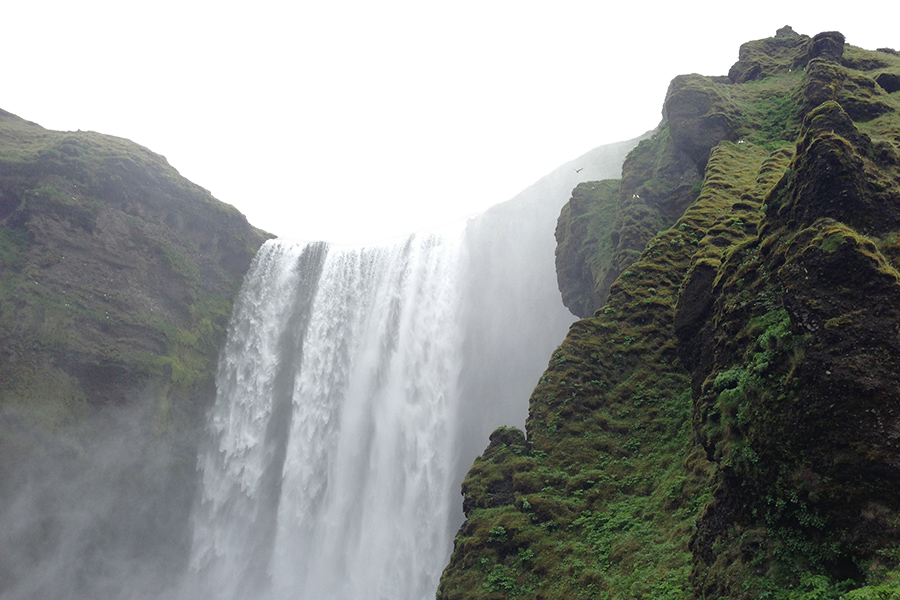

<!DOCTYPE html>
<html lang="en">
<head>
    <meta charset="UTF-8">
    <meta name="viewport" content="width=device-width, initial-scale=1.0">
    <meta http-equiv="X-UA-Compatible" content="ie=edge">
    <title>drawing with path2d</title>
    <style>
        body{
            margin:0;
            display:flex;
            height:100vh;
            align-items: center;
            justify-content: center;

        }
        
    </style>
</head>
<body>
    <canvas id="drawing" width="450" height="50"></canvas>
    <div style = 'display:none'>
        <!--  -->
    </div>

    <script>
        const canvas = document.getElementById('drawing');
        const context = canvas.getContext('2d');

        let width;
        let height;

        function setup() {
            //fixed canvas size
            width = canvas.width;
            height = canvas.height;

            // set the css display size
            canvas.style.width = width + 'px';
            canvas.style.height = height + 'px';

        // set the number of actual canvas pixels, scaled for screen resolution
            let scale = window.devicePixelRatio;
            canvas.width = width * scale;
            canvas.height = height * scale;
            
            //normalize the coordinate system
            context.scale(scale, scale);
        }

        // variable for a box
        let xPosition = 0;
        let yPosition = 0;
        let boxWidth = 50;
        let boxHeight = 50;

        let pixelShift = 5; // how many pixels the box should move every function call
        
        function draw() {
            //clear the canvas
            context.clearRect(0,0,width,height);
            
           //draw the initial box on the canvas
            context.fillStyle ='red';
            context.fillRect(xPosition, yPosition, boxWidth, boxHeight);

            xPosition += pixelShift;

            if(xPosition > width - boxWidth || xPosition < 0) {
                pixelShift = pixelShift * -1;
            }

            requestAnimationFrame(draw);
        };


        setup();
        draw();
         </script>
</body>
</html>
